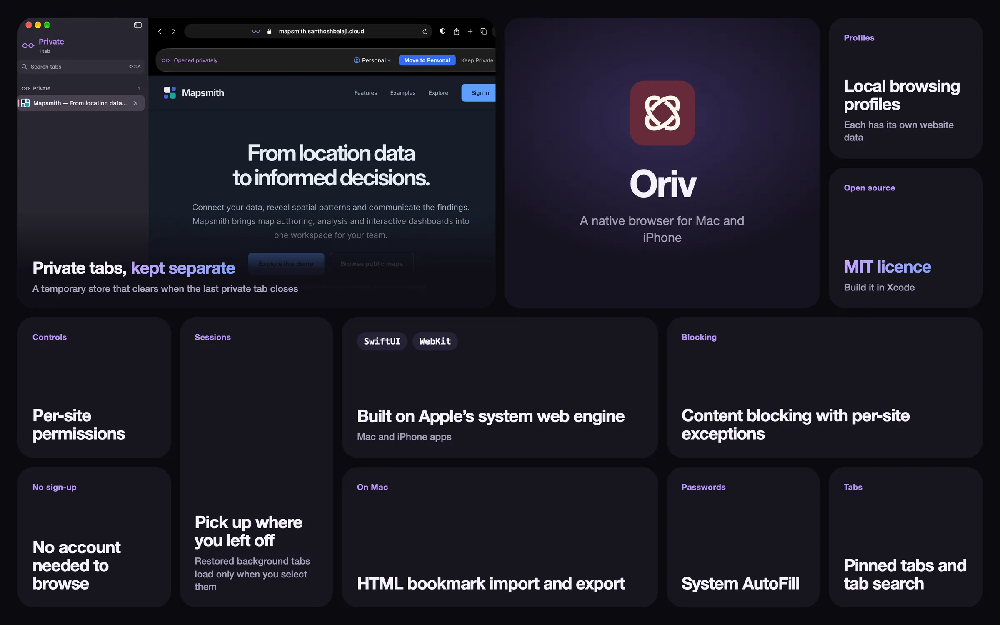

Oriv / Native browser
A native browser for Mac and iPhone
I built Oriv with SwiftUI and Apple’s system WebKit. It includes local browsing profiles, private tabs and per-site controls.
Open source and in active development
View Oriv on GitHub ↗
The story
Why I built it.
Oriv is my exploration of what a native browser can do with the WebKit engine already on Apple devices. I built Mac and iPhone apps in SwiftUI and worked on the parts around the web page, including profiles and what happens when a browsing session is restored. An earlier version also included a workspace. I narrowed the current work to the browser itself and kept the old saved data on disk. The upgrade can bring saved web links into bookmarks without rewriting the old database. The source is public under the MIT licence.
The problem
What it solves.
A browser needs to remember enough to restore ordinary sessions and handle private browsing separately. People also need a way to manage permissions for individual sites.
Who it’s for: Mac and iPhone users looking for a native browser with local profiles.
Workflow
How Oriv works.
- 01Choose a profileUse a local browsing profile or start a private session.
- 02Set site controlsManage permissions and content-blocking exceptions for individual sites.
- 03Pick up a sessionUse session recovery to return to regular tabs.
Engineering
Decisions and limits.
I give each browsing profile its own website data store. Private tabs share a temporary store that clears when the last private tab closes. Restored background tabs wait until selected before their pages load.
You can build the public source in Xcode. The repository documents a production release hold for the browser-only milestone.
My role
What I built.
I build Oriv for Mac and iPhone and am its sole maintainer.
- Open source under the MIT licence
- No provider account required to browse
- HTML bookmark import and export on Mac
- System Password AutoFill support
Swift · SwiftUI · WebKit · CloudKit · XcodeGen